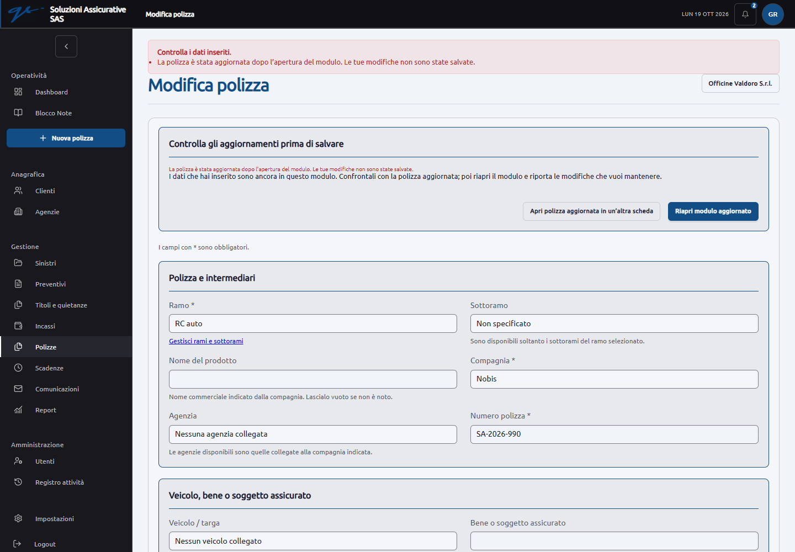
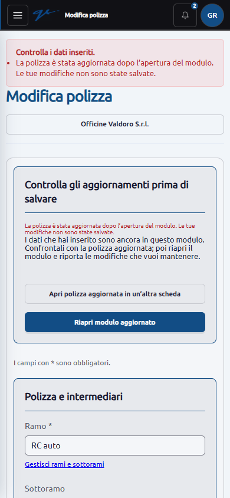

Soluzioni Assicurative SAS · R4 Insurance
Correzioni dell’audit
19 ottobre 2026. Completate e verificate le quattro priorità F01–F04. Questo aggiornamento integra l’audit del 18 ottobre, che conserva le prove dei problemi originari.
| Rilievo | Comportamento corretto | Verifica |
|---|---|---|
| F01 · Cancellazioni | Contatti, beni, annotazioni, veicoli, relazioni e nuclei possono essere eliminati solo dall’admin. Gli operatori mantengono le modifiche consentite. Restano i vincoli sui dati collegati e sul cliente di appartenenza. | Richieste dirette di commerciale e responsabile operativo respinte; pulsanti nascosti; admin autorizzato sui record eliminabili. Collegamenti non coerenti respinti. |
| F02 · Modifiche simultanee | Ogni modulo di modifica contiene il riferimento ai dati aperti. Se la polizza cambia, il salvataggio viene bloccato e il testo inserito resta nel modulo. È possibile consultare la polizza aggiornata in un’altra scheda e riaprire il modulo. | Due modifiche nello stesso secondo; tentativi senza riferimento o con valore errato; due schede reali del browser, confronto e nuovo salvataggio. Il blocco dal giorno successivo alla fine lavorazione e le correzioni admin motivate continuano a funzionare. |
| F03 · Autori nello storico | Un account con log, documenti o altri dati operativi collegati non viene cancellato. L’admin può disattivarlo, conservando l’attribuzione. Gli account inutilizzati restano eliminabili. | Cancellazione da amministrazione, profilo e modello; autore presente soltanto nel registro; autore di un’annotazione senza log; disattivazione; protezione dell’ultimo admin. |
| F04 · Filtri ed esportazioni | Il caricamento completo riparte dalla prima pagina della tabella interessata anche quando la pagina contiene più tabelle con paginazioni separate. I filtri correnti rimangono applicati. | 512 eventi esportati da pagina 2, con attraversamento del blocco da 500 righe; 511 eventi dopo filtro; 12 attività; 12 allegati; 33 clienti. Excel scaricati e conteggio delle righe controllato. PDF generato con 512 righe dichiarate dall’esportatore. |
Prove eseguite
- Suite PHP completa: 260 test, 4.367 asserzioni, nessun errore o fallimento. Risultato completo.
- Verifica ulteriore dell’autore presente soltanto nel registro: superata. Risultato mirato.
- JavaScript: sei controlli superati su paginazione, filtri testuali, importi e date. Build completata; rimane l’avviso sulle dimensioni di alcuni pacchetti già presente nell’audit.
- Browser Chrome isolato: otto verifiche di flusso/esportazione e sei controlli di layout a 1.440 e 390 pixel; nessun errore JavaScript o richiesta esterna. Risultati del browser.
- Database SQLite temporanei, file di collaudo e posta simulata. Il database operativo non è stato modificato; queste correzioni non richiedono migrazioni.
Le prove coprono le correzioni indicate. Non costituiscono una nuova verifica completa di sicurezza, concorrenza sul server definitivo, tutti i dispositivi o consegna delle email reali.
Schermate controllate


Filtri e comandi di esportazione su smartphone · Excel con 512 eventi · PDF dello storico · Excel filtrato con 511 eventi

Prossimo lavoro
F05: aggiornare gli avvisi quando un titolo viene saldato. Seguono la pulizia dei ruoli e il percorso preventivo/polizza, i tipi numerici e data negli Excel, la paginazione delle comunicazioni, gli aggiornamenti mirati delle dipendenze e le rifiniture responsive descritte nell’audit.
Restano da definire con il cliente la matrice dei ruoli, i testi pubblici e i moduli approvati, gli obblighi documentali per ramo, le regole di maturazione delle provvigioni e i parametri reali della posta. F06–F10 e U01–U05 rimangono aperti.